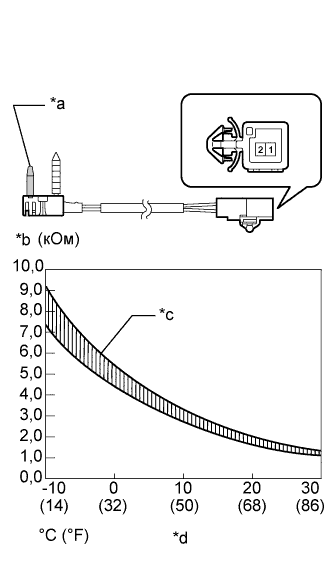
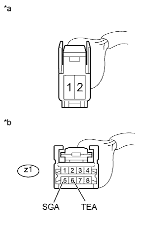

DTC B1413/13 Цепь датчика температуры испарителя |
| Код DTC | Условие обнаружения DTC | Неисправный участок |
| B1413/13 | Обрыв или короткое замыкание в цепи термистора системы кондиционирования № 1. |
|
| 1.СНИМИТЕ ПОКАЗАНИЯ ПОРТАТИВНОГО ДИАГНОСТИЧЕСКОГО ПРИБОРА (ДЛЯ ТЕРМИСТОРА СИСТЕМЫ КОНДИЦИОНИРОВАНИЯ № 1) |
В режиме Data List проверьте работоспособность термистора системы кондиционирования № 1 (Нажмите здесь).
| Информация на дисплее прибора | Измеряемая величина / диапазон измерения | Нормальное состояние | Замечание по диагностике |
| Evaporator Fin Thermistor | Показание термистора системы кондиционирования № 1 / Мин.: -29,7°C (-21,46°F) Макс.: 59,55°C (139,19°F) | Отображается фактическая температура испарителя | Обрыв в цепи: -29,7°C (-21,46°F). Короткое замыкание в цепи: 59,55°C (139,19°F). |
| Результат | Следующий шаг |
| ОК (при поиске неисправностей по таблице признаков неисправностей) | А |
| ОК (при поиске неисправностей по DTC) | B |
| NG | C |
|
| ||||
|
| ||||
| А | ||
| ||
| 2.ПРОВЕРЬТЕ ТЕРМИСТОР СИСТЕМЫ КОНДИЦИОНИРОВАНИЯ № 1 |
|  |
Снимите термистор системы кондиционирования № 1 (Нажмите здесь).
Измерьте сопротивление в соответствии со значениями, приведенными в таблице ниже.
| Контакты для подключения диагностического прибора | Условие | Заданные условия |
| 1 - 2 | -10°C (14°F) | 7,30 - 9,10 кОм |
| -5°C (23°F) | 5,65 - 6,95 кОм | |
| 0°C (32°F) | 4,40 - 5,35 кОм | |
| 5°C (41°F) | 3,40 - 4,15 кОм | |
| 10°C (50°F) | 2,70-3,25 кОм | |
| 15°C (59°F) | 2,14 - 2,58 кОм | |
| 20°C (68°F) | 1,71 - 2,05 кОм | |
| 25°C (77°F) | 1,38 - 1,64 кОм | |
| 30°C (86°F) | 1,11 - 1,32 кОм |
| *a | Чувствительный элемент |
| *b | Сопротивление |
| *c | Допустимый диапазон |
| *d | Температура |
|
| ||||
| OK | |
| 3.ПРОВЕРЬТЕ ЖГУТ ПРОВОДОВ СИСТЕМЫ КОНДИЦИОНИРОВАНИЯ |
|  |
Снимите жгут проводов кондиционера (Нажмите здесь).
Измерьте сопротивление в соответствии со значениями, приведенными в таблице ниже.
| Контакты для подключения диагностического прибора | Условие | Заданные условия |
| z1-6 (TEA) - 2 | Всегда | Менее 1 Ом |
| z1-5 (SGA) - 1 | Всегда | Менее 1 Ом |
| z1-6 (TEA) - масса | Всегда | 10 кОм или более |
| z1-5 (SGA) - масса | Всегда | 10 кОм или более |
| *a | Вид спереди разъема со стороны жгута проводов: (к термистору кондиционера № 1) |
| *b | Вид спереди разъема со стороны жгута проводов: (к блоку управления системой кондиционирования) |
|
| ||||
| OK | ||
| ||